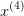
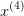

3.2 Método da bisseção
O método da bisseção explora o fato de que uma função contínua
![f : [a,b] → ℝ](main746x.png) com
com  tem um zero no intervalo
tem um zero no intervalo  (veja o
teorema de Bolzano 3.1.1). Assim, a ideia para aproximar o zero de uma tal
função
(veja o
teorema de Bolzano 3.1.1). Assim, a ideia para aproximar o zero de uma tal
função  é tomar, como primeira aproximação, o ponto médio do intervalo
é tomar, como primeira aproximação, o ponto médio do intervalo
![[a,b]](main750x.png) , i.e.:
, i.e.:
 |
Pode ocorrer de  e, neste caso, o zero de
e, neste caso, o zero de  é
é  . Caso
contrário, se
. Caso
contrário, se  , então
, então  . Neste caso, tomamos como
segunda aproximação do zero de
. Neste caso, tomamos como
segunda aproximação do zero de  o ponto médio do intervalo
o ponto médio do intervalo ![[a,x (0)]](main758x.png) , i.e.
, i.e.
 . Noutro caso, temos
. Noutro caso, temos  e, então, tomamos
e, então, tomamos
 . Repetimos este procedimento até obtermos a aproximação
desejada (veja, Figura 3.2).
. Repetimos este procedimento até obtermos a aproximação
desejada (veja, Figura 3.2).

De forma mais precisa, suponha que queiramos calcular uma aproximação
com uma certa precisão  para um zero
para um zero  de uma dada função
contínua
de uma dada função
contínua ![f : [a,b] → ℝ](main765x.png) tal que
tal que  . Iniciamos, tomando
. Iniciamos, tomando  e:
e:
 |
Verificamos o critério de parada, i.e. se  ou:
ou:
 |
então  é a aproximação desejada. Caso contrário, preparamos a próxima
iteração
é a aproximação desejada. Caso contrário, preparamos a próxima
iteração  da seguinte forma: se
da seguinte forma: se  , então setamos
, então setamos
 e
e  ; noutro caso, se
; noutro caso, se  , então
setamos
, então
setamos  e
e  . Trocando
. Trocando  por
por  , temos a nova
aproximação do zero de
, temos a nova
aproximação do zero de  dada por:
dada por:
 |
Voltamos a verificar o critério de parada acima e, caso não satisfeito, iteramos novamente. Iteramos até obtermos a aproximação desejada ou o número máximo de iterações ter sido atingido.
 no intervalo
no intervalo ![[- 2, 0]](main784x.png) com precisão
com precisão  .
.
Solução. Primeiramente, observamos que resolver a equação dada é
equivalente a calcular o zero de  . Além disso, temos
. Além disso, temos
 . Desta forma, podemos iniciar o método da bisseção tomando o
intervalo inicial
. Desta forma, podemos iniciar o método da bisseção tomando o
intervalo inicial ![[a(0),b(0)] = [- 2,0]](main788x.png) e:
e:
 |
Apresentamos as iterações na Tabela 3.1. Observamos que a precisão
 foi obtida na quarta iteração com o zero de
foi obtida na quarta iteração com o zero de  sendo
aproximado por
sendo
aproximado por  .
.


Usando Python neste exemplos, temos:
...
>>> a=-2; b=0; x = (a+b)/2; [a,b,x]
[-2, 0, -1.0]
>>> [(b-a)/2, np.sign(f(a)*f(x))]
[1.0, -1.0]
>>> b=x; x=(a+b)/2; [a,b,x]
[-2, -1.0, -1.5]
>>> [(b-a)/2, np.sign(f(a)*f(x))]
e, assim, sucessivamente. Veja o código completo na Seção 3.2.1.

Vamos, agora, discutir sobre a convergência do método da bisseção. O próximo Teorema 3.2.1 nos garante a convergência do método da bisseção.
Teorema 3.2.1 (Convergência do método da bisseção). Sejam ![f : [a,b] → ℝ](main830x.png) uma função contínua tal que
uma função contínua tal que  e
e  o único zero de
o único zero de  no
intervalo
no
intervalo  . Então, a sequência
. Então, a sequência  do método da bisseção
satisfaz:
do método da bisseção
satisfaz:
|
|
i.e.,  quando
quando  .
.
 e o zero
e o zero  da função é menor que a metade do tamanho do
intervalo
da função é menor que a metade do tamanho do
intervalo ![[a(n),b(n)]](main841x.png) (veja Figura 3.2), i.e.:
(veja Figura 3.2), i.e.:
 |
Por construção do método, temos ![[a(n),b(n)] ⊂ [a(n-1),b(n-1)]](main843x.png) e:
e:
 |
Desta forma:
 |
Logo, vemos que:
 |

Observamos que a hipótese de que  tenha um único zero no intervalo não
é necessária. Se a função tiver mais de um zero no intervalo inicial, as iterações
irão convergir para um dos zeros. Veja o Exercício 3.2.3.
tenha um único zero no intervalo não
é necessária. Se a função tiver mais de um zero no intervalo inicial, as iterações
irão convergir para um dos zeros. Veja o Exercício 3.2.3.
Observação 3.2.1. O Teorema 3.2.1 nos fornece uma estimativa para a convergência do método da bisseção. Aproximadamente, temos:
 |
Isto nos leva a concluir que o método da bisseção tem taxa de convergência linear.
Exemplo 3.2.2. No Exemplo 3.2.1, precisamos de  iterações do método da
bisseção para computar uma aproximação com precisão de
iterações do método da
bisseção para computar uma aproximação com precisão de  do zero
de
do zero
de  tomando como intervalo inicial
tomando como intervalo inicial ![[a,b] = [- 2,0]](main853x.png) .
Poderíamos ter estimado o número de iterações a priori, pois, como vimos
acima:
.
Poderíamos ter estimado o número de iterações a priori, pois, como vimos
acima:
 |
Logo, temos:

O método da bisseção tem a boa propriedade de garantia de convergência, bem como de fornecer uma simples estimativa da precisão da aproximação calculada. Entretanto, a taxa de convergência linear é superada por outros métodos. A construção de tais métodos está, normalmente, associada a iteração do ponto fixo, a qual exploramos na próxima seção.
3.2.1 Código Python: método da bisseção
O seguinte código é uma implementação em Python do algoritmo da bisseção. As variáveis de entrada são:
- f - função objetivo
- a - extremo esquerdo do intervalo de inspeção
![[a, b]](main856x.png)
- b - extremo direito do intervalo de inspeção
![[a,b]](main857x.png)
- TOL - tolerância (critério de parada)
- N - número máximo de iterações
A variável de saída é:
- p - aproximação da raiz de f, i.e.
 .
.
def bissecao(f, a, b, TOL, N):
i = 1
fa = f(a)
while (i <= N):
#iteracao da bissecao
p = a + (b-a)/2
fp = f(p)
#condicao de parada
if ((fp == 0) or ((b-a)/2 < TOL)):
return p
#bissecta o intervalo
i = i+1
if (fa * fp > 0):
a = p
fa = fp
else:
b = p
raise NameError(’Num. max. de iter. excedido!’);
Exercícios
E 3.2.1. Considere a equação  . Use o método da bisseção
com intervalo inicial
. Use o método da bisseção
com intervalo inicial ![[a,b] = [0,1]](main860x.png) e
e  para calcular a
aproximação  da solução desta equação.
para calcular a
aproximação  da solução desta equação.
E 3.2.2. Trace o gráfico e isole as três primeiras raízes positivas da função:
 |
em intervalos de comprimento  . Então, use o método da bisseção para obter
aproximações dos zeros desta função com precisão de
. Então, use o método da bisseção para obter
aproximações dos zeros desta função com precisão de  .
.
Resposta. A primeira raiz se encontra no intervalo  . A segunda raiz no intervalo
. A segunda raiz no intervalo  . A terceira raiz se encontra
no intervalo
. A terceira raiz se encontra
no intervalo  .
.
Exemplo 3.2.3. O polinômio  tem raízes
tem raízes  e
e
 no intervalo
no intervalo ![[1∕2,3]](main872x.png) .
.
- Se o método da bisseção for usando com o intervalo inicial
![[1∕2, 3]](main873x.png) ,
para qual raiz as iterações convergem?
,
para qual raiz as iterações convergem?
- É possível usar o método da bisseção para a raiz
 ? Justifique
sua resposta.
? Justifique
sua resposta.
E 3.2.3. Mostre que a equação do problema 3.1.7 possui uma solução no
intervalo ![[1,v + 1]](main875x.png) para todo
para todo  positivo. Dica: defina
positivo. Dica: defina  e considere a seguinte estimativa:
e considere a seguinte estimativa:
 |
Use esta estimativa para iniciar o método de bisseção e obtenha o valor
da raiz com pelo menos 6 algarismos significativos para  e
e
 .
.
Resposta.  ;
;  ;
;  ;
;  ;
; 
E 3.2.4 (title=Estática). Considere o seguinte problema físico: uma plataforma está fixa a uma parede através de uma dobradiça cujo momento é dado por:
 |
onde  é angulo da plataforma com a horizontal e
é angulo da plataforma com a horizontal e  é uma constante positiva.
A plataforma é feita de material homogêneo, seu peso é
é uma constante positiva.
A plataforma é feita de material homogêneo, seu peso é  e sua largura é
e sua largura é  .
Modele a relação entre o ângulo
.
Modele a relação entre o ângulo  e o peso
e o peso  próprio da plataforma. Encontre
o valor de
próprio da plataforma. Encontre
o valor de  quando
quando  ,
,  ,
,  , sabendo que o
sistema está em equilíbrio. Use o método da bisseção e expresse o resultado com
4 algarismos significativos.
, sabendo que o
sistema está em equilíbrio. Use o método da bisseção e expresse o resultado com
4 algarismos significativos.
Resposta.  com
com  ;
;  .
.
E 3.2.5. Considere a equação de Lambert dada por:
 |
onde  é um número real positivo. Mostre que esta equação possui uma única
solução
é um número real positivo. Mostre que esta equação possui uma única
solução  que pertence ao intervalo
que pertence ao intervalo ![[0,t]](main903x.png) . Usando esta estimativa como
intervalo inicial, quantos passos são necessário para obter o valor numérico de
. Usando esta estimativa como
intervalo inicial, quantos passos são necessário para obter o valor numérico de  com erro absoluto inferior a
com erro absoluto inferior a  quando
quando  ,
,  e
e  através do
método da bisseção? Obtenha esses valores.
através do
método da bisseção? Obtenha esses valores.
Resposta.  ;
;  ;
;  ;
;  ;
;  ;
; 
E 3.2.6. O polinômio  possui raízes duplas em
possui raízes duplas em  e
e  . O método da bisseção pode ser aplicados a
. O método da bisseção pode ser aplicados a  ? Explique.
? Explique.
E 3.2.7 (title=Eletrônica). O desenho abaixo mostra um circuito não linear
envolvendo uma fonte de tensão constante, um diodo retificador e um resistor.
Sabendo que a relação entre a corrente ( e a tensão (
e a tensão ( ) no diodo é dada
pela seguinte expressão:
) no diodo é dada
pela seguinte expressão:
 |
onde  é a corrente de condução reversa e
é a corrente de condução reversa e  , a tensão térmica dada por
, a tensão térmica dada por
 com
com  , a constante de Boltzmann,
, a constante de Boltzmann,  a temperatura de operação e
a temperatura de operação e
 , a carga do elétron. Aqui
, a carga do elétron. Aqui  ,
,  . Escreva o
problema como uma equação na incógnita
. Escreva o
problema como uma equação na incógnita  e, usando o método da bisseção,
resolva este problema com 3 algarismos significativos para os seguintes
casos:
e, usando o método da bisseção,
resolva este problema com 3 algarismos significativos para os seguintes
casos:
 e
e  .
.
 e
e  .
.
 e
e  .
.
 e
e  .
.
 e
e  .
.
 e
e  .
.
 e
e  .
.

Dica:
 . Resposta. a)
. Resposta. a)  ; b)
; b)  ; c)
; c)  ; d)
; d)  ; e)
; e)  ; f)
; f)  ; g)
; g) 
E 3.2.8 (title= Propagação de erros). Obtenha os valores de  no problema
3.2.7. Lembre que existem duas expressões disponíveis:
no problema
3.2.7. Lembre que existem duas expressões disponíveis:
 |
e
 |
Faça o estudo da propagação do erro e decida qual a melhor expressão em cada caso.
Resposta. a)  ; b)
; b)  ; c)
; c)  ; d)
; d)  ; e)
; e)  ; f)
; f)  ; g)
; g) 
* As versões do livro disponíveis no site podem estar desatualizadas, veja a versão PDF atual no repositório GitHub oficial do projeto.
- IME - UFRGS